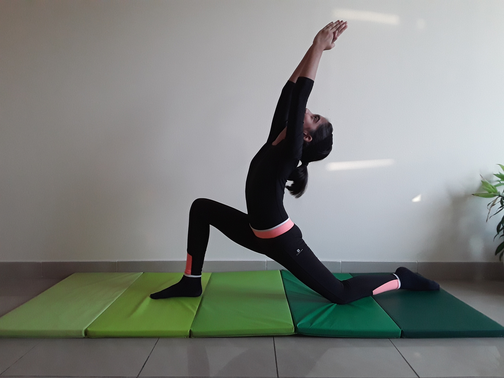

BOAT POSE

Steps to perform Boat Pose
- Begin in a seated position with your knees bent and your feet flat on the floor.
-
Lift your feet off the floor. Keep your knees bent at first. Bring your shins parallel to the floor. This is half boat pose.
-
Your torso will naturally fall back, but do not let the spine round.
-
Straighten your legs to a 45-degree angle if you can do so without losing the integrity of your upper body. You want to keep your torso as upright as possible so that it makes a V shape with the legs.
-
Roll your shoulders back and straighten your arms roughly parallel to the floor with your palms turned up.
-
Do your best to balance on the sit bones, but it's normal if you are resting slightly behind them. Focus on lifting your chest to support the balance.
-
Stay for at least five breaths.
-
Release your legs on an exhale. Then inhale and sit up.